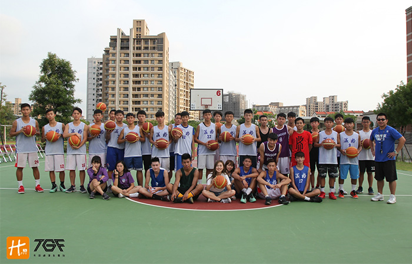

貼文時間：2017/09/09

位於台中市北屯區旱溪旁，外觀建築嶄新，帶了些風雅氣息的韻味，新學校新風氣，105學年度，其籃球隊成立的第四年，即在競爭激烈隊伍眾多的台中區脫穎而出，晉級南區複賽，團隊氣氛、戰力更是一年比一年進步，他們是葳格高中，台中新生代強權。
葳格高中創辦時間短暫，今年也僅是籃球隊成軍第五個年頭，相對大多數球隊是非常年輕的，在招生方面也如多數球隊，需透過校內徵選來選材，加上校園人口數不多，能夠招收的新兵戰力自然有限，球隊利用放學後的兩個小時及社團時間練習，對於非科班學生來說是剛好的訓練，但要在台中區脫穎而出，勢必得拿出高效率的訓練及態度，教練詹明仁表示，球隊的訓練主要透過友誼賽來磨練，會邀約如東大附中、台中二中、亞洲大學等球隊交流，透過比賽檢討不足，針對特定的環節加強，進攻上由於隊伍鋒線完整，內線較為薄弱，多採快攻強勢取勝，防守則是二三區域為主，加強個人能力，有效得分。
提到印象最深的事，詹教練表示，是在105學年度聯賽預賽對上台中二中的比賽，當時打完第一節球隊落後雙位數，但球員沒有因此氣餒，最終在第四節逆轉比分，也拿下小組第一名，導致複賽籤運較好，而後順利晉級南區複賽。
對於今年度的調整，教練也說道，去年的高三主力畢業較多，默契的整合是短期間最需克服的，而今年擔任隊長的7號江尚謙將是隊伍攻防著重心，期待能切能投的他帶領隊伍更上層樓！
詹教練常對球員說:「打球一下子，品德一輩子。」看待球員就如同自己的孩子，期待他們能定位自己的方向，能規劃畢業後的出入，此外，更注重球員的品德，詹教練提到，曾經有位球員在場上爆粗口，隨即被他換下場懲罰，他認為球員的品德比起球技更為重要，畢竟是一輩子的事，希望球員們能悟出這句話的道理。
葳格高中成立僅四年，105學年度即在競爭激烈的台中區預賽拿下第五名，隨後的盃賽更是佳績不斷，完整的陣容，有規劃的訓練，在詹明仁教練的帶領下，葳格先將目標放在台中市冠軍，慢慢經營養成球隊文化，挾帶新生代強權的骨氣，葳格風豹席捲下個賽季！